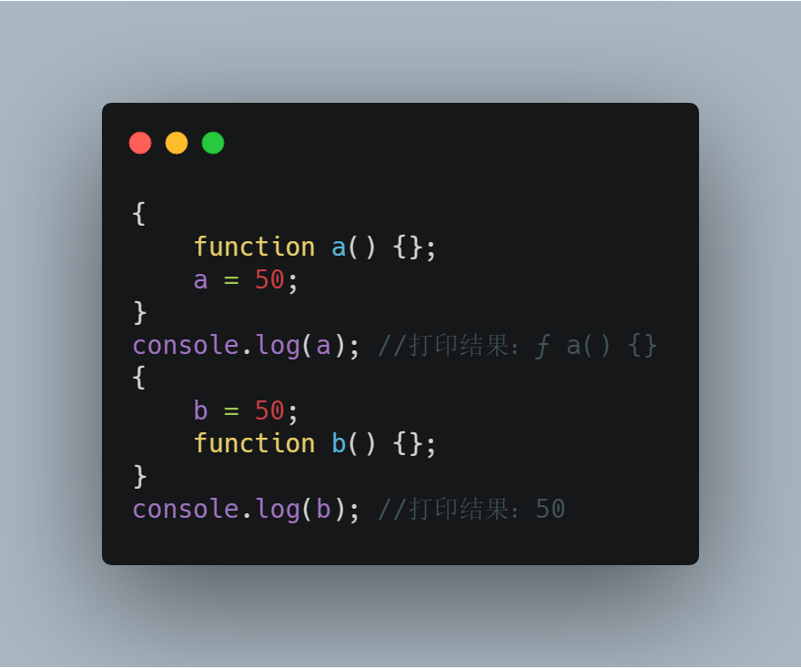
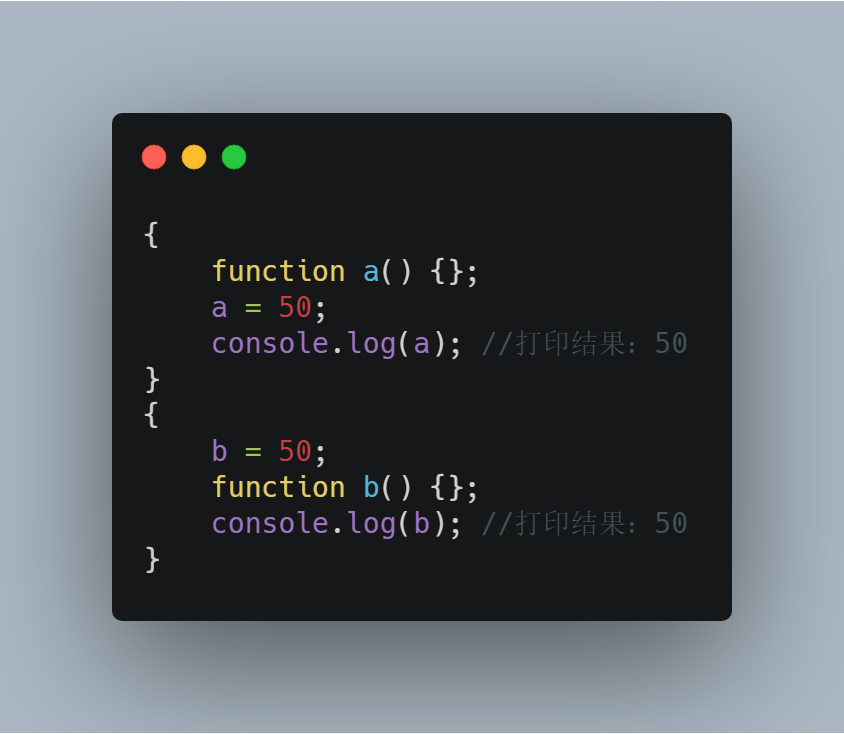
首先把问题放出来，昨天看了一个掘友发的一个问题，然后跟我同事一起研究了一下，没找出来是为什么，然后我回来一直在想为什么，然后各种找资料研究，从各个方面找为什么，比如js上下文，作用域，js垃圾回收，堆栈调用情况等等。
首先如果不看上面的图，以你现在知道的js知识，你觉得打印出来应该是什么。第二张图其实打印出来的结果在意料之中，原因就是函数声明提升，没问题，但是第一张图为什么呢？这里可以发散一下思维，比如说是不是在块作用域中，变量和函数之间存在某种互相覆盖的问题啊，或者说先在块中声明的会被挂载到全局的window对象下面，后面声明的就挂载不上去了，并且不会覆盖，然后可以把代码稍微改改，验证一下你的思想，很有意思。然后下面我们断点调试看下：
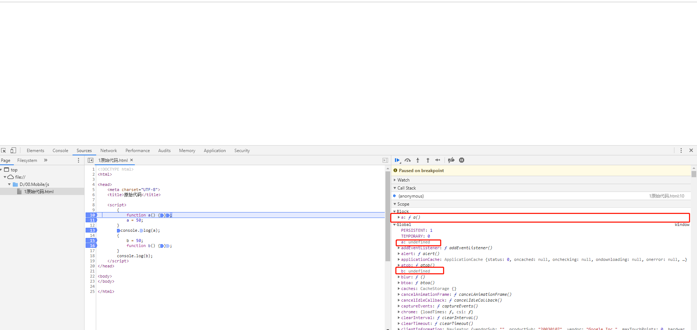
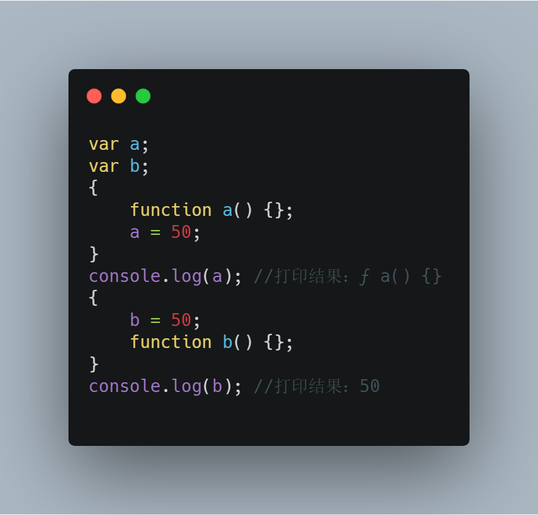
此时我们再看a在块作用域中就已经是方法了，注意此时我function a(){}这段代码还没走完呢，这就说明函数声明在js解析(注意是解析不是执行)的时候被提升到了代码块顶部，进花括号的那一刻起，函数就已经被声明了，我们再往下面一步走
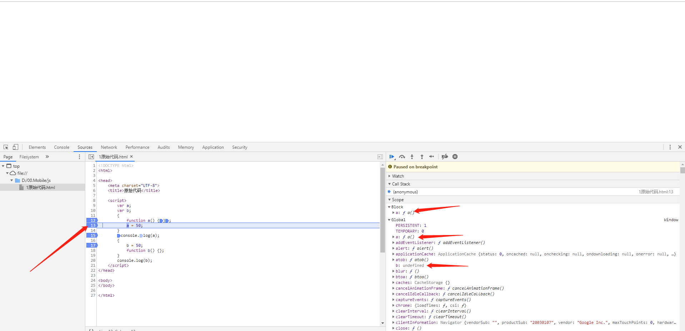
此时a不管在块作用域还是全局作用域中都变成了a函数，那这里是不是可以理解为运行上面一行代码，然后就给全局变量下的a赋值为函数呢，我们再看下一步
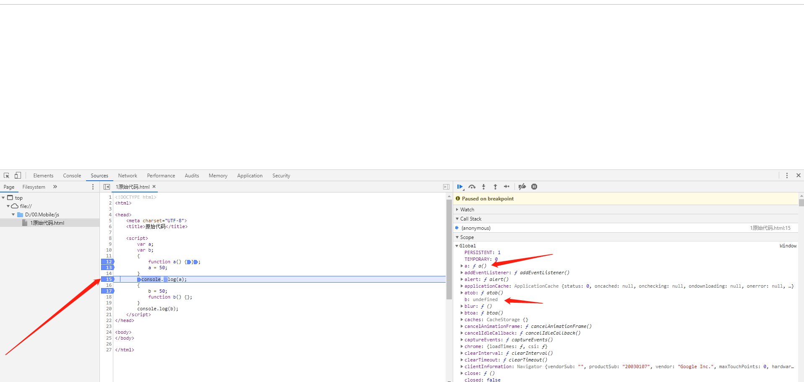
当a=50;走完之后，也就出了块作用域，此时我们看到没有了块作用域，因为已经出了块作用域了，然后全局对象window里面a还是函数，并不是50，但是如果你在块作用域a后面加一行的断点看的话，此时块作用域里面的a的值为50，问题就在这里，为什么此时块作用域里面的a的值跟全局window对象下面的值结果不一样呢？
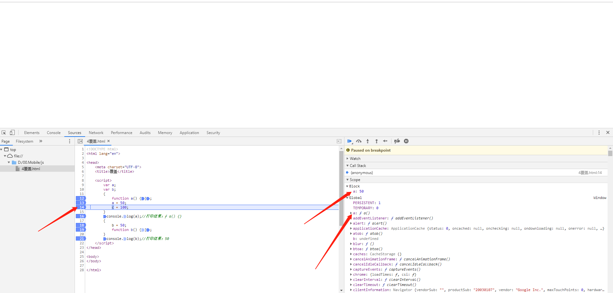
然后我们再往下走一步：
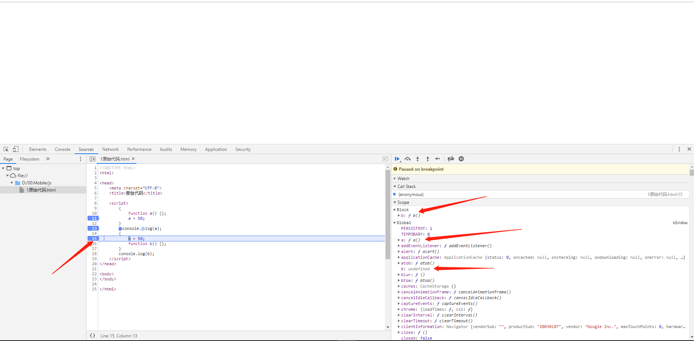
然后进第二个块作用域，发现跟前面进第一个块作用域一样，还没执行第一行，块作用域里面的b已经是函数了，原因也跟第一个一样js解析的时候函数声明提升，然后我们再往下走一步：
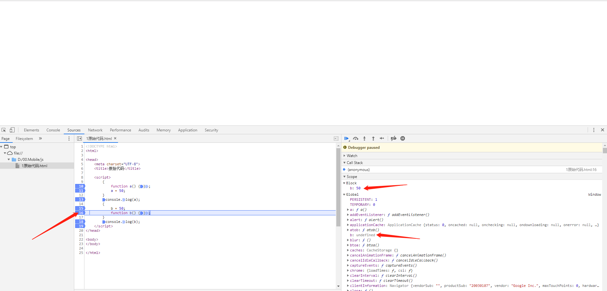
这一步走完我们发现块作用域里面的b已经变成50了，但是全局window对象下面的b还是undefined，这我也不知道为什么，那我也就只能说此时b是定义在块作用域中的内部变量了，再往下走一步
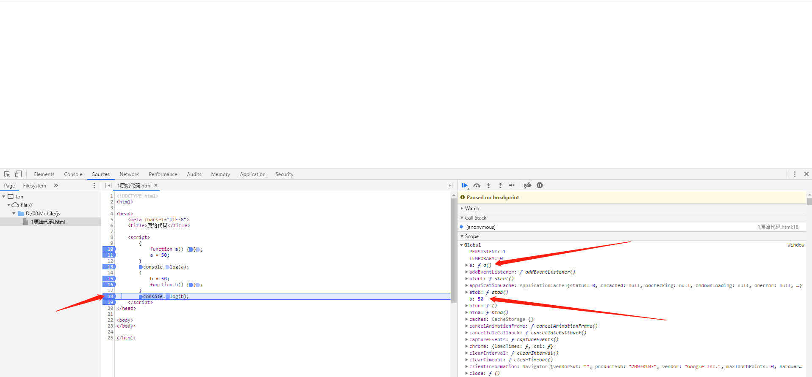
但是当我走出块作用域的时候，b竟然在全局对象下变成了50，那就证明我上面说的不对，b不是块作用域中的内部变量，因为此时执行完方法立马就出块作用域了，我们看的不是很清楚，我们在方法下面加一行代码，方便调试看结果：
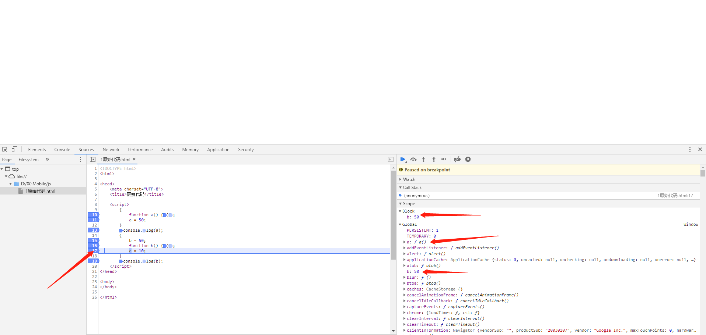
确实是当我b函数那一步走完，块作用域和全局对象window下面的b都变成了50，那我这里我就认为是函数b在js解析的时候就被提升到了块作用域的最上面，执行到b函数那一步其实在之前就已经执行过了，相当于js执行的时候代码变成下面这样：
{
function b() {};
b = 50;
}
我们再看这个代码不正是上面a那一个块作用域的代码吗，所以在块作用域中js执行的时候上下两个块作用域中是一样的，所以在块作用域中打印a，b得到的结果都是50，然后下一步：
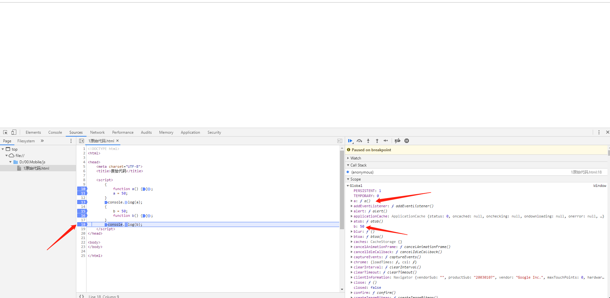
出了块作用域，就只有全局对象window了，然后window对象下面的b还是50，所以最后打印出来也是50。走到这一步就所有的步骤都走完了，那么我们再回头看上面的a为什么块作用域中的值跟window对象下面的a的值不一样，通过走完下面一个代码块我们发现上面代码块跟下面代码块只有函数放的位置不一样，结果就不一样，那我们就看一下这里函数声明提升到底是怎么提升的。
然后我就找到阮一峰博客里面写的关于es6块级作用域的文章：
http://es6.ruanyifeng.com/#docs/let#%E5%9D%97%E7%BA%A7%E4%BD%9C%E7%94%A8%E5%9F%9F
另一篇关于js变量的生命周期的文章：
https://dmitripavlutin.com/variables-lifecycle-and-why-let-is-not-hoisted/
在第一篇文章中，看见里面有真么一段话：
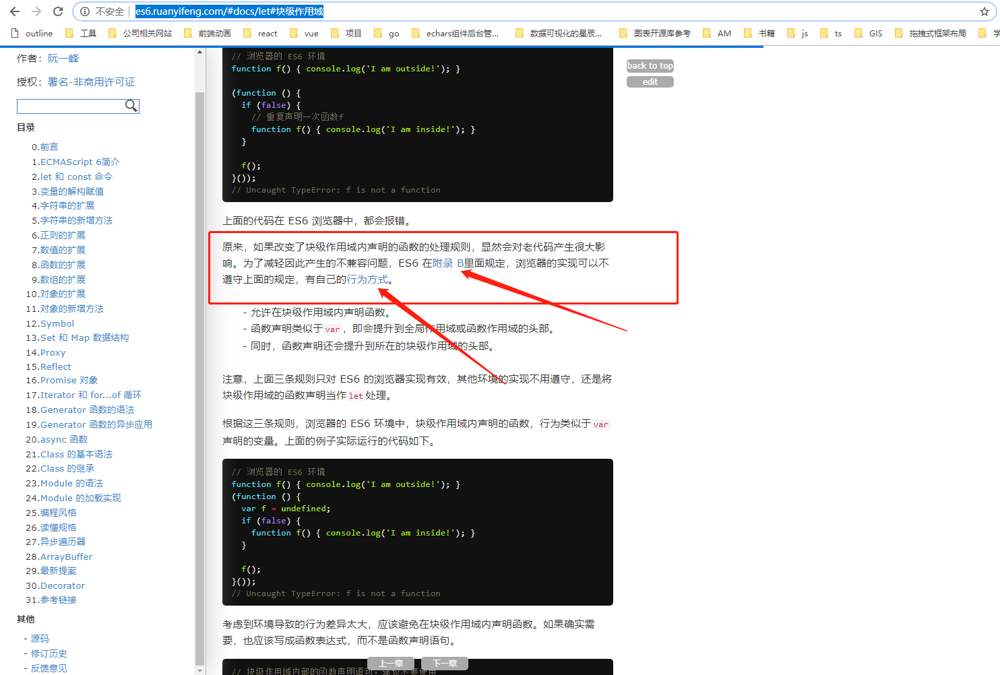
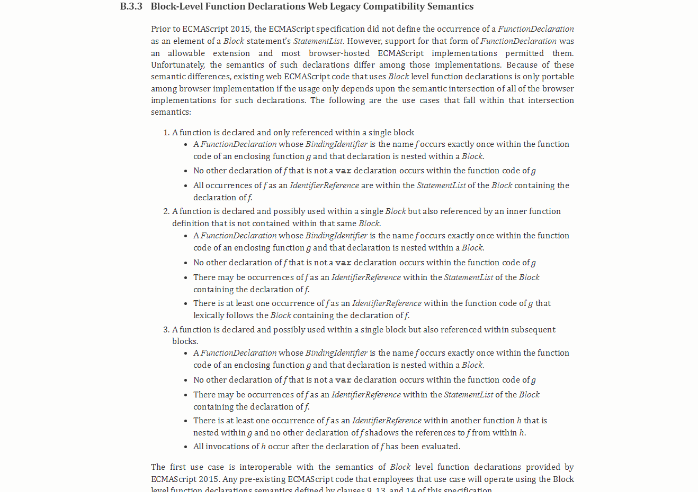
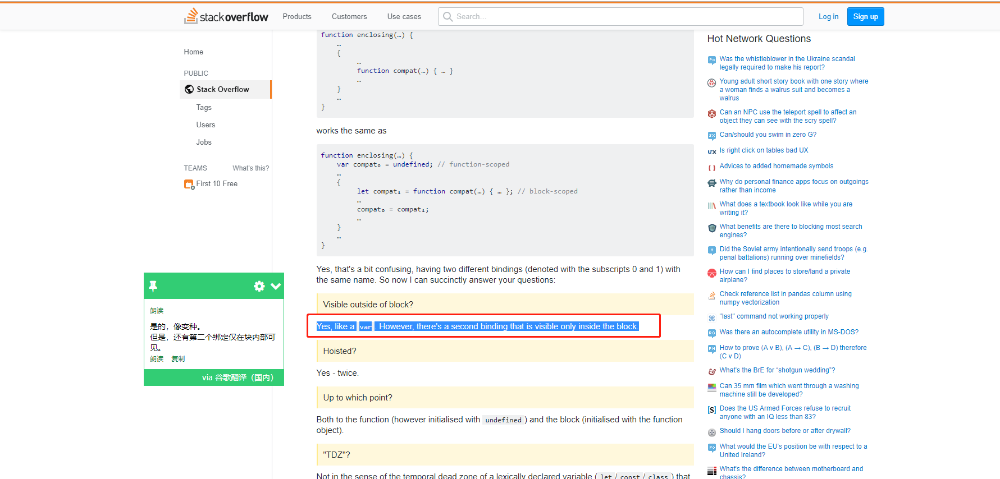
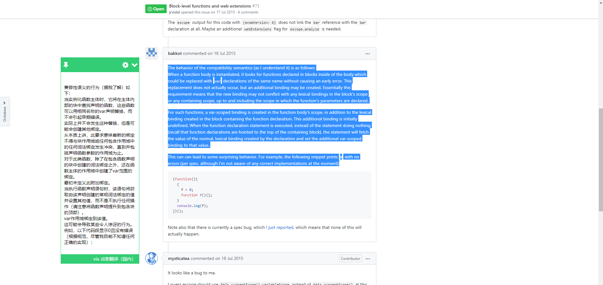